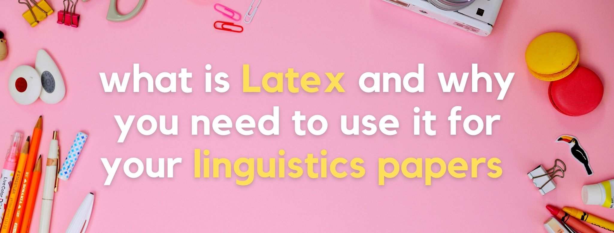
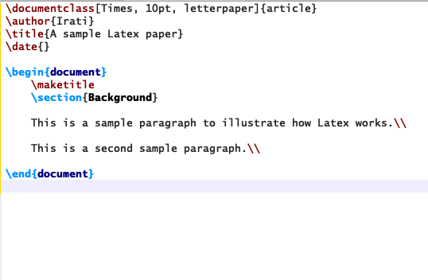
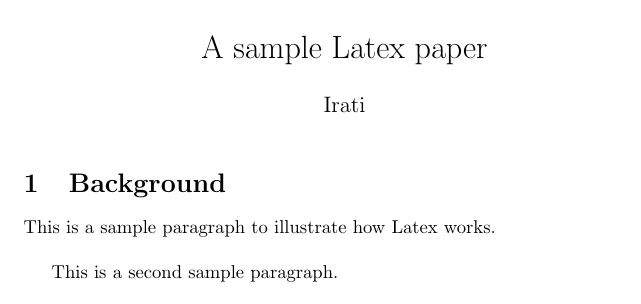

Tags: Latex, linguistics, writing

Linguistics papers often include tons of visual information, such as syntax trees, IPA symbols, glosses, and so on. These things are cool because they are helpful to convey your message, but they are sometimes hard to manage when writing your paper with a standard word processor. Who hasn’t drawn a syntax tree using PowerPoint and then taken a screenshot of it to include it in a Word doc? 🙄
Fortunately, Latex exists so we don’t have to deal with these issues. In this blog post, I explain what Latex is and how you can use it to boost the quality of your linguistics papers.
Latex is a markup language used to prepare high-quality documents. If you don’t know what a markup language is, it’s when you include tags in your text so things are rendered in a particular way. Other popular markup languages are HTML and XML, which you have probably heard about.
In the image below, you can see what a Latex document looks like when typing (🔎 note all those tags, like \documentclass or \begin!).

Now, this other image shows what the actual document looks like when you “run” the original file with tags and convert it into a PDF document. Magic! 🪄✨

Ok, so to start producing these beautiful Latex documents you might want to install a TeX distribution first 👨💻. This is basically a free software that allows you to use Latex and that also produces the final PDF document (the magic!).
You can find a list of available software here. I personally use one called TeXstudio, but any of the others listed there would do the work as well!
Another option is to use Overleaf, an online solution. Overleaf is similar to Google docs, but for Latex.
To format a basic Latex paper, you’ll need to first declare what’s called the “document class”. Here, you’re simply saying that you want to write a paper (an “article”, in Latex’s terms). This might seem a very obvious step, but there are other things you can produce with Latex, so it’s important to be specific. The tag for this is \documentclass{article}, and it should be the first line in your document. Then, you will need to add two other important tags: \begin{document} and \end{document}.
\documentclass{article}
\begin{document}
Your text would go here.
\end{document}
Those three things are basic to start producing your paper, which you’ll write between the \begin{document} and end{document} tags. Also, whatever comes before the \begin{document} (in this case, the \documentclass{article} tag) is called the “preamble”.
For each tag, you can add extra information to specify further characteristics. That extra information is called a “parameter”, and parameters always appear between [ ]. For example, you can add some parameters to your \documentclass{article} tag and create something like this: \documentclass[12pt]{article}. The [12pt] indicates that the font used in the document has to be 12-point.
Some other common things to add in the preamble are \title{whatever title you want}, \author{a name}, and \date{a date}. Note that in order for your title to show up in the final rendered paper, you’ll have to use the \maketitle tag after the \begin{document} tag.
\documentclass{article}
\title{A sample Latex paper}
\author{Irati}
\date{September 2021}
\begin{document}
\maketitle
Your text would go here.
\end{document}
Lastly, Latex also allows you to add “comments”. This is text that appears in your original file with tags, but will not show up in the final PDF document. To write a comment, simply use a % symbol. Whatever comes after it, won’t be part of your final document.
Actual text of the paper
% a random comment
More text
As you can imagine, there are tons of Latex tags and there’s no space to go over all of them here. But you can check out the official documentation to learn about other useful tags 📖.
So far so good, but how does Latex help with writing linguistics papers? Well, here is where packages come in! 📦
Packages provide additional functionalities to make your paper look better. There are packages for everything, really! But some of them are particularly useful for linguists. Below, I provide a list with the names of some cool packages for linguists together with a hyperlink to their official documentation 👇.
gb4e (documentation here) and ling-macros (documentation here)TIPA (documentation here)pst-vowel (documentation here)phonrule (documentation here)xytree.sty (documentation here)Qtree (documentation here) and tikz-qtree (documentation here)stmaryrd (documentation here)To use a package, use the tag \usepackage{name of package} in the preamble.
As you have seen, Latex offers a lot of options, and even though it’s simple to understand the basics, it takes some time to master it. But just like with everything else, practice makes perfect! 😉 Once you get the hang of it, it will seem much easier and you’ll write faster. In the meantime, I recommend using a cheat sheet like this one.